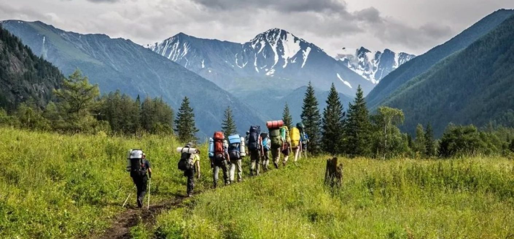

| Главная | Летние туры | Зимние туры |
О нас ~Контакты~ |
Отзывы |
Маршрут каждого направления мы разрабатываем сами. Мы любим то, чем мы занимаемся, и выводим в приоретет качество путешествий.
После каждой поездки мы проводим опрос, узнаём у каждого гостя, было ли ему комфортно, что понравилось, а что стоило бы улучшить. Исходя из общей статистики, мы каждый год улучшаем программы.
Ознакомиться с отзывами можно здесь: Отзывы
Мы уже побывали в отелях и убедились в качестве сервиса и уюта. Все фотографии на Booking соответсвуют действительности, жильё имеет не менее 8 звёзд.
Наши гиды, не жалея себя и не щадя живота своего, едят осетинские пироги, пробуют грузинские вина, принимают нарзанные ванны и документируют каждый этап своего путешествия. Мы делаем всё, чтобы составить самые насыщенные, познавательные и впечатляющие программы и поделиться ими с нашими туристами. Идеальные тайминги, вкуснейшие блюда и напитки, удобные стыковки мероприятий, комфортабельный транспорт, влюбленные в свое дело гиды и множество незабываемых эмоций и красочных фотографий ждут вас на всех наших маршрутах.
Спасибо, что выбрали наши услуги!
|